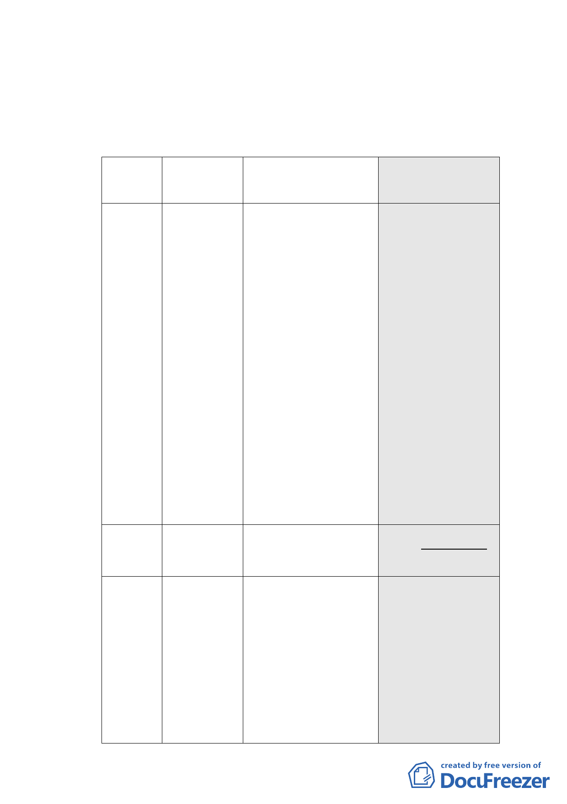

三、 審議歷程：本案業經召開 3 次專案小組進行討論，市府發展
局業於 99 年 6 月 17 日以北市都規字第 09934421500 號函送
申請單位依 99 年 6 月 9 日第 3 次專案小組審查意見修正後資
料到會。
四、計畫內容重點概述：
項目
現行計畫
（92.1.7）
公展計畫
（98.12.22）
本次修正內容
（99.6.17）
土地及建
物使用項
目
作指定之使用
項目應達容積
樓地板面積
1/2 以上，其餘
除不准作住宅
外比照商三使
用。
●建築物低層部(地面層
第 1 至第 3 層)應作指定
之使用項目，其餘比照
商三規定，住宅使用之
容積樓地板面積不得
超過申請基地容積樓
地板面積（不含臺北好
好看獎勵容積）之 1/2
以上。建築物非供住宅
使用之樓層，其同層及
以下各樓層應均非供
住宅使用。
●依 92 年計畫規定。
●申請臺北好好看容
積獎勵部分比照商
三，亦不得作住宅，
且不得計入前項使用
容積樓地板面積之計
算。
●申請臺北好好看之獎
勵容積樓地板面積應
作商三使用項目（不准
許作住宅使用），且不
得計入前項使用容積
樓地板面積之計算。
建蔽
率
60％
增訂不得低於 40%
增訂不得低於 40%
容積放寬
依本計畫及其
他規定得增加
容積者，其增
加容積之總和
不得超過基準
容積之 50%。
●不適用基地合併獎勵 ●不適用基地合併獎
規定。
勵規定。
●依本計畫及其他規定 ●依本計畫及其他規
得增加容積者，其增加 定得增加容積者，其
容積之總和 不得超過 增加容積之總和不得
基準容積之 50%，其中 超 過 基 準 容 積 之
適用容積移 轉者不得 50%，其中適用容積
超過基準容積之 20%。 移轉者不得超過基準
容積之 20%。
-7-